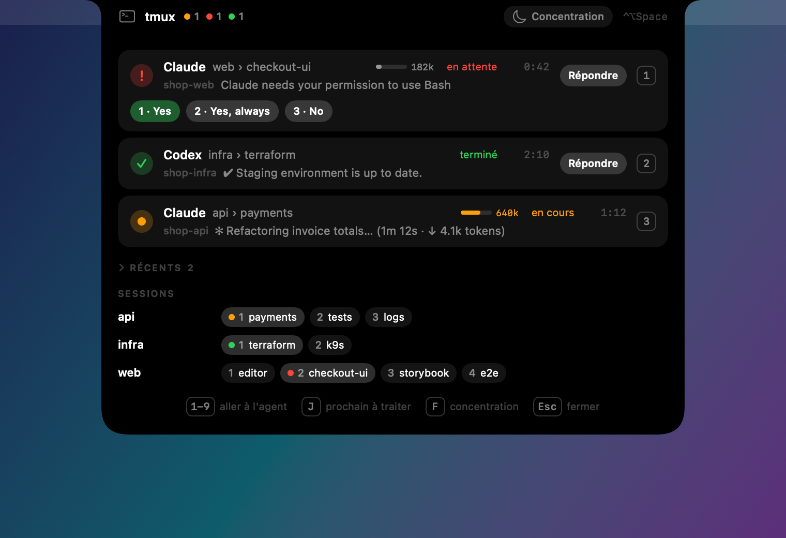
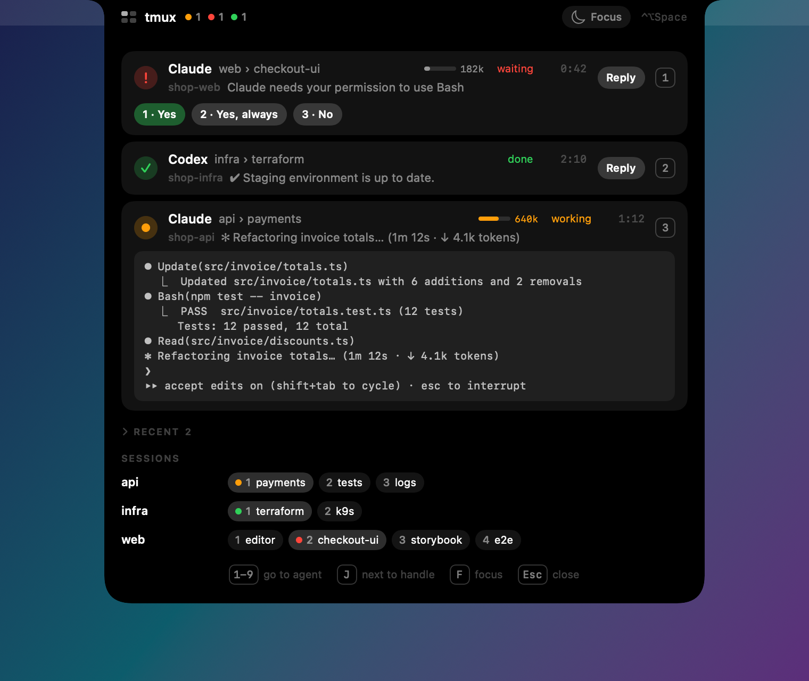
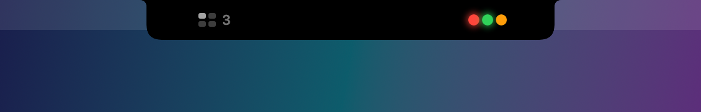

Un point par agent
Rouge s'il t'attend, vert s'il a fini, orange pendant qu'il travaille. Toujours visible autour de la notch.
Plusieurs agents IA dans tmux, et tu ne sais jamais lequel a fini ? Un coup d'œil, un clic, et tu es sur le bon pane.
La plupart des outils de notch s'accrochent à une application. TmuxIsland s'accroche à ce que tous tes terminaux ont en commun : ton serveur tmux. C'est pour ça que ça marche partout, et qu'un clic t'amène exactement là où l'agent t'attend.
list-panes, capture-pane, list-clients) et tout ce qu'il fait (select-window, select-pane, switch-client, send-keys) passe par tmux.tmux -L, -S) sont suivis..tmux.conf.# chaque seconde, et à chaque changement de fichier $ tmux list-panes -a -F '#{pane_id} #{session_name} …' $ tmux capture-pane -p -t %12 # que dit l'agent ? # tu cliques sur « shop-api › payments » $ tmux select-window -t =api:1 $ tmux select-pane -t %12 $ tmux switch-client -c /dev/ttys003 -t =api # …et le terminal passe devant # tu choisis « 2 · Yes, always » $ tmux send-keys -t %12 -l 2
Claude Code, Codex, Gemini CLI… dans des panes tmux
Observe, décide, agit
Dans le bon terminal, à un clic
Rouge s'il t'attend, vert s'il a fini, orange pendant qu'il travaille. Toujours visible autour de la notch.
Fenêtre, pane et terminal : tu arrives exactement là où l'agent t'attend.
Les vrais choix du menu de permission (Yes, Yes always, No) deviennent des boutons.
Les 10 dernières lignes du pane, sans quitter ce que tu fais.
Où en est la fenêtre de contexte de chaque session Claude Code.
Retrouve l'agent que tu as raté, même après l'avoir acquitté.
Plus de son ni de toast : seuls les points restent.
L'île et ses alertes suivent ton curseur d'un écran à l'autre.
Ouvre l'île, saute au prochain agent à traiter, active la concentration. Tout est configurable.
Les captures utilisent des projets fictifs.



Il lit tmux, le statut officiel des sessions Claude Code (~/.claude/sessions) et, au besoin, l'écran du pane. Un changement de fichier déclenche un relevé immédiat.
Une machine à états distingue en cours, en attente et terminé, et ignore tes propres interruptions (Esc).
Il te prévient (point, toast, son). Tu cliques, il lance select-window, select-pane et switch-client, puis amène ton terminal devant.
Deux façons : Homebrew (une commande, sans avertissement) ou un téléchargement manuel.
$ brew tap kgrandemange/tap $ brew trust --tap kgrandemange/tap $ brew install --cask tmuxisland
Homebrew demande d'approuver les taps tiers (une seule fois) : la deuxième commande s'en charge. Ensuite Homebrew vérifie l'empreinte SHA-256 du téléchargement et s'occupe de l'avertissement du premier lancement. Mise à jour avec brew upgrade --cask tmuxisland.
Pour que macOS ouvre une app sans aucun message, Apple exige qu'elle soit notarisée, ce qui demande un compte développeur payant (99 $ par an). Je ne paie pas pour publier un outil gratuit : l'app est signée « ad hoc » et macOS te demande de confirmer une fois. Rien n'est caché : tout le code source est sur GitHub, la version est compilée là-bas par GitHub Actions, et tu peux vérifier l'empreinte de ton téléchargement ci-dessous.
$ shasum -a 256 TmuxIsland.zip Doit correspondre à la valeur publiée avec le téléchargement
Versions et empreintes (SHA-256)
$ git clone https://github.com/kgrandemange/tmux-island $ cd tmux-island && ./scripts/install.sh
Oui, puisque tout passe par tmux. La mise au premier plan du bon onglet est vérifiée avec WezTerm ; pour les autres terminaux, l'application est amenée devant et le bon pane est sélectionné dans tmux.
Non. Ça fonctionne tout de suite en lisant le statut des sessions de Claude Code et l'écran du pane. Les hooks rendent seulement « terminé / en attente » encore plus instantané.
Non. L'application ne contient aucun code réseau. Elle lit tmux, la fin des transcripts de Claude Code (pour la jauge de contexte) et quelques fichiers d'état locaux.
Claude Code est pris en charge en priorité (statut officiel, jauge de contexte, boutons de validation). Codex, Gemini CLI, OpenCode, Aider, Amp, Cursor Agent et Goose sont détectés via le processus et l'écran du pane.
L'île devient une pilule centrée en haut de l'écran. Avec plusieurs écrans, une option la fait suivre ton curseur.
Parce qu'elle n'est pas notarisée par Apple (il faut un compte développeur payant, et cet outil est gratuit). Confirme une fois avec clic droit › Ouvrir, ou installe-la avec Homebrew, qui s'en occupe. Ensuite elle s'ouvre normalement.
L'app est compilée pour les puces M1 et suivantes. Les Mac Intel ne sont pas pris en charge pour l'instant.
Tu n'as pas à me croire sur parole : tout le code est sur GitHub sous licence MIT, l'app ne contient aucun code réseau (un pare-feu applicatif comme Little Snitch ou LuLu montrera qu'elle ne se connecte nulle part), les versions sont compilées depuis le code étiqueté par GitHub Actions, et chacune est livrée avec une empreinte SHA-256 vérifiable.
Au départ je l'avais gardé fermé par prudence, pour un petit outil personnel. Mais une app qui lit tes terminaux et envoie des touches à tes agents mérite d'être vérifiable : te demander de faire confiance à un binaire illisible n'était pas juste. Il est donc ouvert sous licence MIT, avec une politique de sécurité et une chaîne de build publique. Il a été conçu avec l'aide de Claude Code ; les tests et les revues sont aussi dans le dépôt.
Oui : issues et pull requests sont les bienvenues sur GitHub. Voir CONTRIBUTING.md pour compiler, tester et proposer une modification.